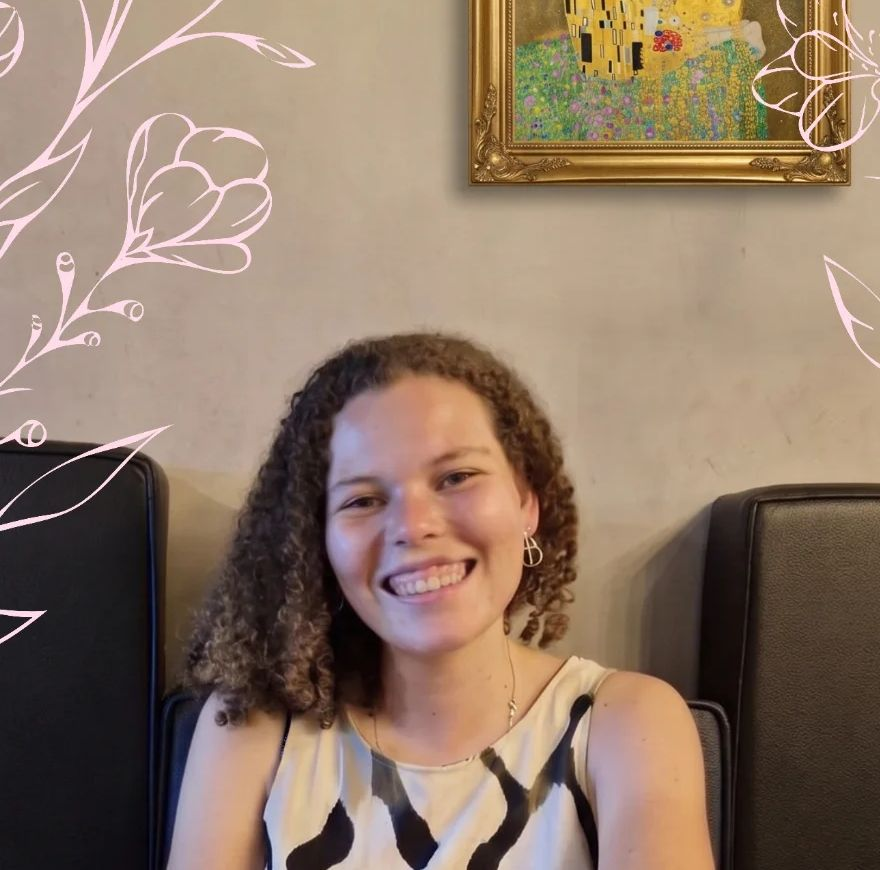

Um espaço seguro para acolher não só os momentos felizes e idealizados, mas também os medos, as dúvidas e as ambivalências que muitas vezes não encontram lugar para serem ditas.
Atendimento online · CRP 05/83714
É a área da Psicologia voltada para o cuidado emocional durante todo o ciclo gravídico-puerperal: as tentativas de engravidar, a gravidez, o parto e o puerpério.
Quando um bebê nasce, a gravidez também termina, e uma nova fase começa. São transformações profundas no corpo, na rotina, na identidade e nas relações, que merecem cuidado e espaço para serem vividas.
“Cada mulher em trabalho de parto está dando à luz a si mesma.”
A chegada de um bebê transforma a família inteira. Pais, parcerias e quem está ao redor também passam por mudanças, inseguranças e novos papéis.
Por isso, o cuidado perinatal acolhe mães, pais e famílias, favorecendo a adaptação emocional de todos e a construção de vínculos familiares mais saudáveis.
Cada história é única. Estes são os momentos que acompanho de perto.
Ansiedade, expectativas e o desgaste emocional da espera, incluindo a infertilidade e a reprodução assistida.
Medos, mudanças no corpo e na identidade, preparação emocional para o parto e o vínculo com o bebê.
Adaptação à nova rotina, sobrecarga, ansiedade materna e acolhimento na depressão pós-parto.
Um espaço respeitoso para viver e elaborar a dor de uma perda na gestação.
Ambivalências, culpa, dúvidas e as transformações na vida, no trabalho e na relação do casal.
Apoio a quem também se torna pai ou mãe, e aos desafios dos vínculos na nova família.
“A Psicologia Perinatal entrou na minha vida muito antes de eu conhecer esse nome.”
Desde muito nova, sempre me senti próxima do universo infantil e dos temas ligados ao nascimento. Havia algo na gestação, no parto e na chegada de um bebê que despertava minha curiosidade.
Anos depois, lendo A Tenda Vermelha, uma cena de parto ficou marcada em mim. Entrei na Psicologia, estudei diferentes temas e cheguei a pensar em fazer um curso de doula, mas esse interesse nunca deixou de me acompanhar.
Foi no meu TCC que tudo fez sentido: ao pesquisar a Psicologia Perinatal no Brasil, encontrei um campo que reunia questões que me mobilizavam havia anos. Depois, concluí a pós-graduação em Saúde Mental Perinatal no CDM – Instituto Cuidando de Mamães, de Luiza Maia, e hoje dedico minha atuação a acolher as vivências emocionais da gestação, do parto, do pós-parto e da maternidade.
Mande uma mensagem pelo WhatsApp para tirar dúvidas e combinar o início.
Um encontro para conhecer a sua história, o que te trouxe e os seus objetivos, sem julgamentos.
Encontros por videochamada, no conforto da sua casa e respeitando o seu tempo.
Mande uma mensagem e tire suas dúvidas, sem compromisso.